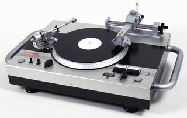

1.12.1. Аналоговые электронные устройства и их классификация

Аналоговые электронные устройства (АЭУ) – это устройства усиления и обработки аналоговых электрических сигналов, выполненные на основе электронных приборов. Аналоговый сигнал представляет собой непрерывную функцию, с неограниченной по количеству значений в различные моменты времени. Наиболее часто встречающимся аналоговым сигналом являются звуки нашей речи, которые на осциллограммах имеют различные, причудливые формы. Аналоговые сигналы изменяются по тому же закону, что и описываемые им физические процессы.
Аналоговые устройства обработки сигналов продолжают занимать важное место в промышленной электронике. Это объясняется тем, что большинство типов первичных преобразователей физических величин — датчики температуры, давления и пр. — являются источниками аналоговых сигналов, а многие исполнительные элементы в объектах управления — электродвигатели, электромагниты и т.п. — управляются непрерывно изменяющимся электрическим током. Сложные системы управления, основой которых являются цифровые вычислительные комплексы, сопрягаются с объектами управления и датчиками с помощью аналоговых и аналого-цифровых устройств. Все это стимулирует ежегодное появление в мире многих десятков новых моделей аналоговых и аналого-цифровых интегральных микросхем (ИМС).
Классификация АЭУ
Следует выделить четыре большие группы по которым можно классифицировать аналоговые электронные устройства:
- Вторичные источники электропитания.
- Электронные усилители.
- Электронные генераторы.
- Преобразователи электрических сигналов.